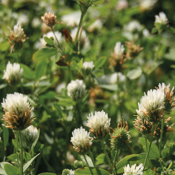
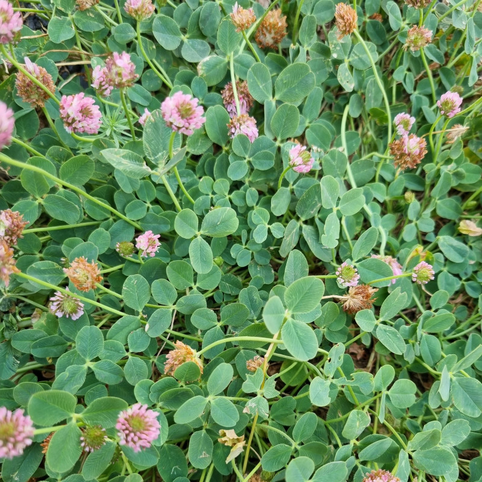
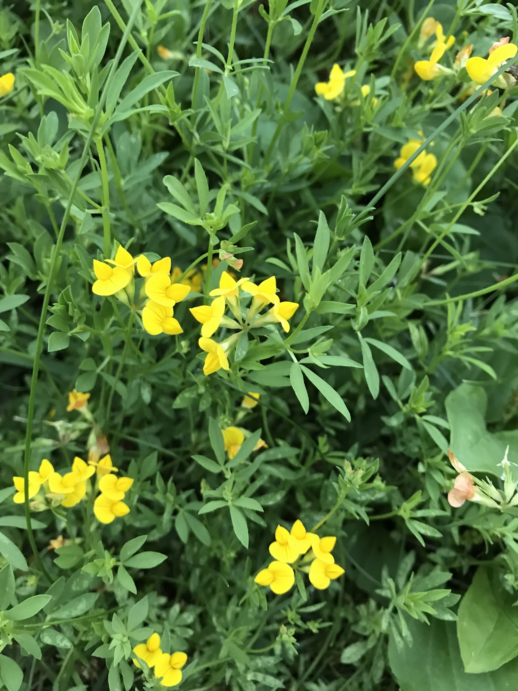
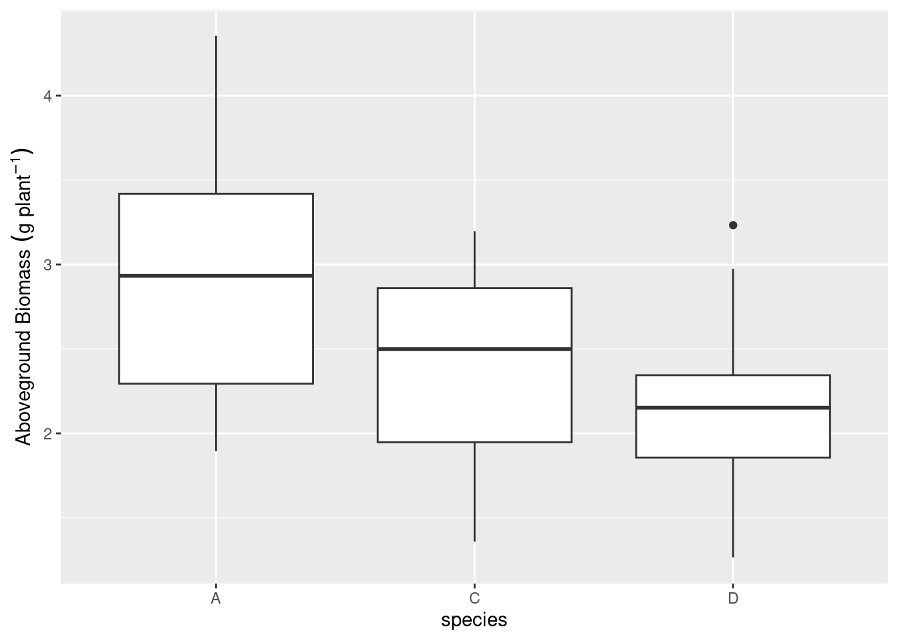
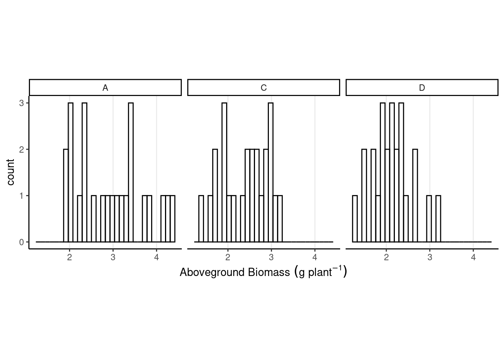

{kind=link}
library(tidyverse)
library(car)Day 2 - 08/21/2024
From last class
Think of your project topic!
Talk to us if you need data. Check out kaggle, Harvard Dataverse, this R package.
About R versus SAS, versus python…
Assignment 1 is due next Wednesday 28th.
Intro to statistical modeling
Mental checklist:
- What is the problem or question? (what is the objective?)
- How is the data generated?
Short story
My dad wants to grow clover in our farm and has different species to pick from.
How does the mental checklist look like?
1. What is the problem or question? (what is the objective?)
2. How is the data generated?
The data
We planted three different legume species and waited two months for them to grow.



source 1, 2, 3.
dd_lotus <- read.csv("data/lotus_part1.csv") %>%
transmute(species = factor(species), agb_g)
summary(dd_lotus) species agb_g
A:24 Min. :1.265
C:24 1st Qu.:1.969
D:24 Median :2.355
Mean :2.492
3rd Qu.:2.936
Max. :4.354 dd_lotus %>%
ggplot(aes(species, agb_g))+
labs(y = expression(Aboveground~Biomass~(g~plant^{-1})))+
geom_boxplot()
dd_lotus %>%
ggplot(aes(agb_g))+
labs(x = expression(Aboveground~Biomass~(g~plant^{-1})))+
geom_histogram( fill = NA, color = "black")+
theme_classic()+
theme(aspect.ratio = 1,
panel.grid.major.x = element_line())+
facet_wrap(~species)
Data generating process
To the whiteboard!
Fitting the model to data
Live R session
For next class:
Read Chapter 2 from the book.
Think of your project topic!
Schedule a 15-min meeting and we can chat about your project.